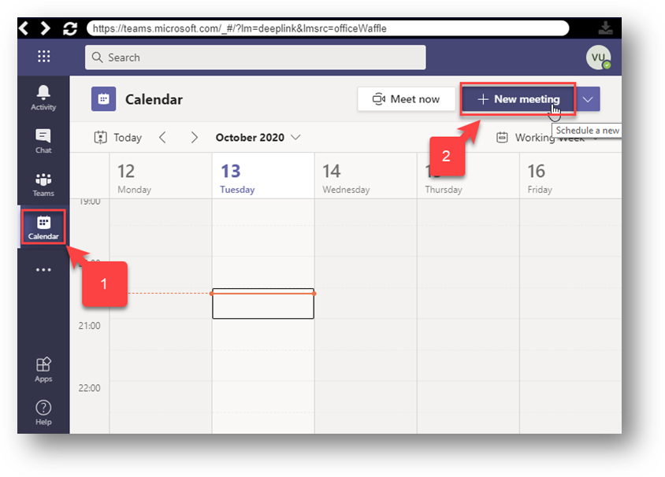
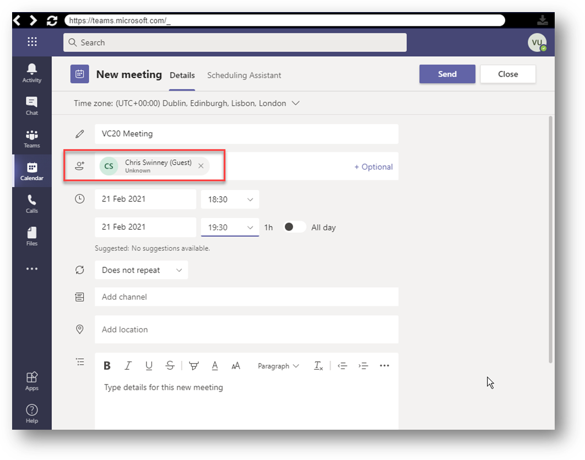
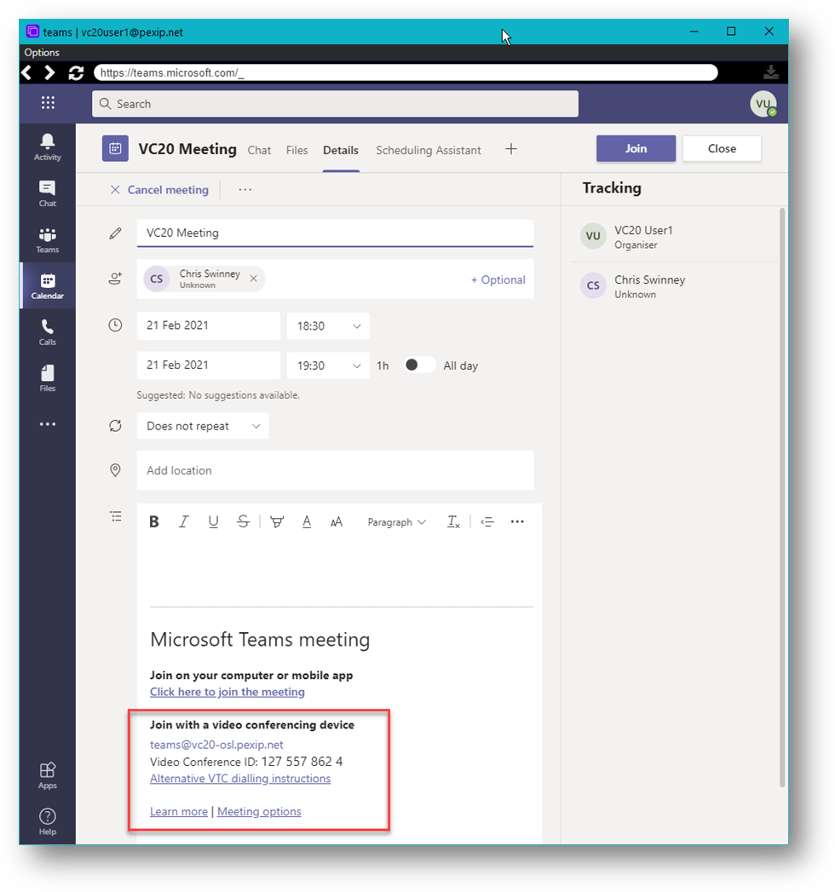
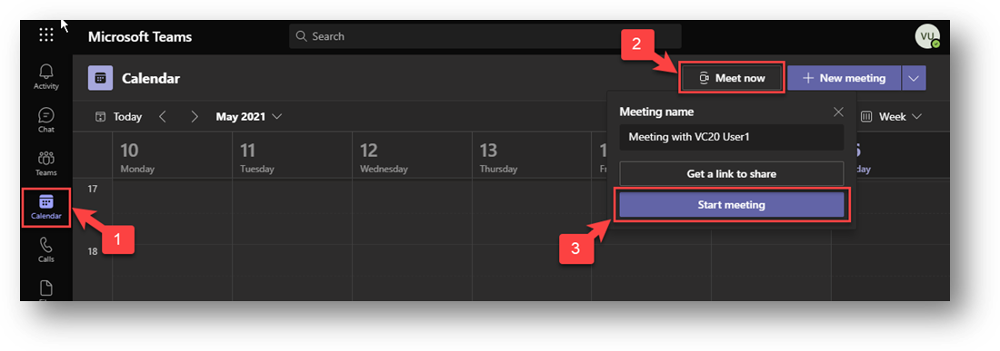
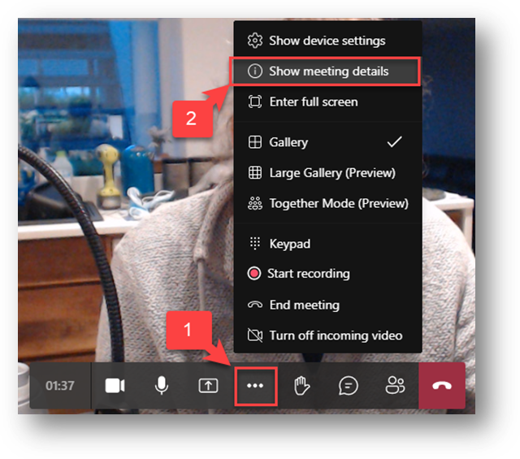
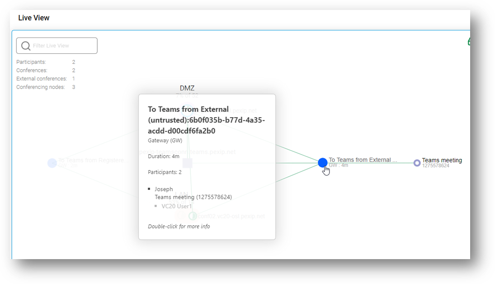
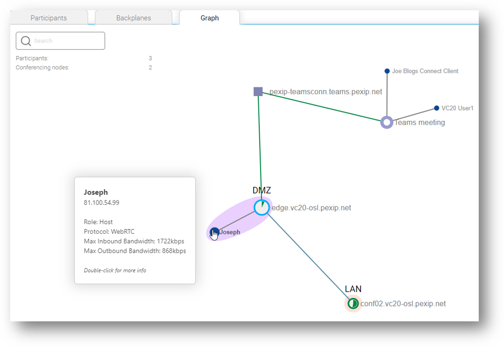
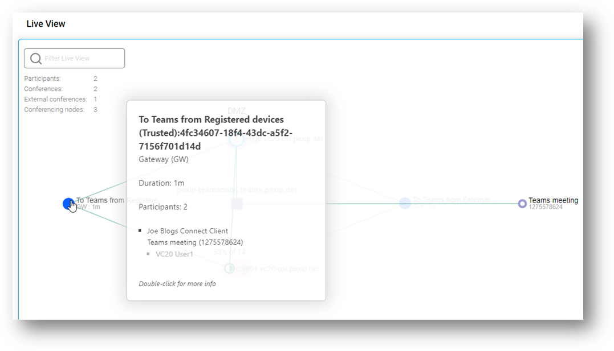
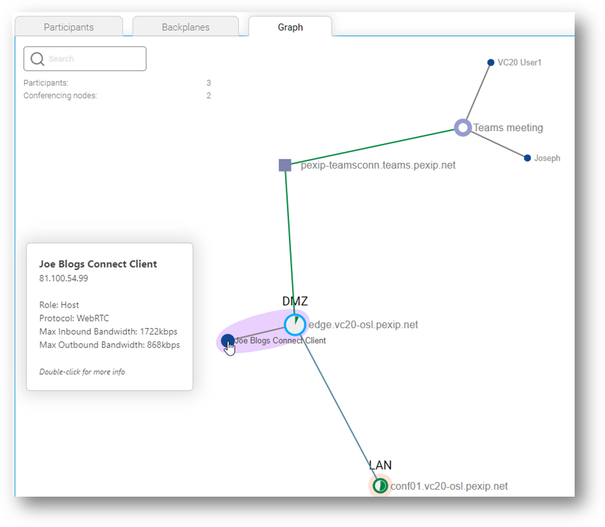

Suggested completion time: 40 minutes
Use section #12 of the lab sheet.
The first step will be to configure your Pexip Infinity deployment with the integration details of the Teams connector:
To configure the Virtual Reception:
Rule 1 – Trusted Gateway to Teams from the internal network:
Options not listed can remain as-is:
teams\.(\d{9,12})(@<your Pexip Infinity domain>)?.
Rule 2 – Trusted gateway to Teams from any network for registered devices:
Options not listed can remain as-is:
teams\.(\d{9,12})(@vcX-osl\.pexip\.net)?
Rule 3 – Untrusted gateway to Teams from the External network:
teams\.(\d{9,12})(@vcX-osl\.pexip\.net)?
NOTE: there is a limitation in this lab exercise as we are using a single Azure tenant and MS365 subscription for all lab groups. Ideally, we would use a single tenant per group, but we have yet to find a practical way to achieve this. This limitation means that we can only add one CVI setting, and this points to just one group, which is the demo deployment used by the trainer (group vc20). All users will therefore get Teams Invite links that point to this group rather than your group, however, you can substitute this groups domain information for your own group’s details. For example, the Teams meeting Invite would always link to the Virtual Reception teams@vc20-osl.pexip.net, however, if you were in group vc1, you would use teams@vc1-osl.pexip.net.
To create a Teams meeting, you need to log into the Teams client (on your OWN laptop/PC, NOT in the RDP session) with the credentials for your user and group (see Section #12 in the lab sheet). If you already use a Teams login, you could either:
You can set up a Teams meeting in a couple of ways via the calendar:
Using New Meeting:
Click the Calendar Tab, then “New Meeting”

You MUST ensure that you add an attendee (such as your email address) otherwise the Teams Meeting invite details will not be added. Even so, these details will not appear until you have saved the invite and re-opened it:
Initial Meeting invite with no Join instructions:

Meeting Invite re-opened once it has been “Sent”:

E.g, you now see in the body of the message:
Join with a video conferencing device
teams@vc20-osl.pexip.net
Video Conference ID: 127 557 862 4
Alternative VTC dialling instructions
Learn more | Meeting options
NOTE: Be aware that the domain seen will be that of “vc20-osl.pexip.net”, and the “Alternate VTC dialling instructions” link will also point to the VC20 edge node. Please ignore this and use the domain for your group. Calls should be therefore routed through your groups Infinity deployment, and if you have set things up correctly, all will work just fine.
Using Meet Now:
This is a little clunky and it may be that Microsoft will continue to work on this (it has changed a few times recently), but at the time of writing, you should be able to follow these steps:
Click the Calendar Tab, then “Meet Now”, then “Start Meeting”:

Click “Join Now”(there is a link that says “Other join options”, but it simply seems to turn from purple to white and nothing else),. Once in the meeting, Click “More actions” (the three dots in the action bar), then select

NOTE: As before, the domain seen will be that of “vc20-osl.pexip.net”, and the “Alternate VTC dialling instructions” link will also point to the VC20 edge node. Please ignore this and use the domain for your group. Calls should be therefore routed through your groups Infinity deployment, and if you have set things up correctly, will work just fine.
After the Virtual Reception and Call Routing Rule have been configured, third-party systems and devices can now dial the alias of the Virtual Reception (e.g. teams@<your Pexip Infinity domain>) and then, when prompted by the IVR service, enter the meeting code of the Teams conference they want to join. The Pexip Infinity distributed gateway will then route the call into the appropriate Teams conference.
After the Call Routing Rule has been configured, third-party systems and devices can now dial an alias that matches your specified pattern (e.g. teams.1234567890@<your Pexip Infinity domain>) to be routed directly into the appropriate Teams conference (in this example the conference with a meeting code of 1234567890).
In both cases, try dialling from a registered device or internal connection, and from an external connection to ensure that lobby bypass is working as expected.
To ensure you have the Teams integration working correctly, grab some screenshots of Live View that show the gateway calls in operation, using both the trusted and untrusted connection methods. You should be able to join the same Microsoft Teams meeting for these different devices. Remember to drill down into the gateway call instance in Live View to show the participant graph, for example:
A screenshot of the main Live View for an untrusted Gateway instance to Microsoft Teams:

A screenshot of the graph view of participants in an untrusted Gateway instance to Microsoft Teams:

A screenshot of the main Live View for a trusted Gateway instance to Microsoft Teams:

A screenshot of the graph view of participants in a trusted Gateway instance to Microsoft Teams:
